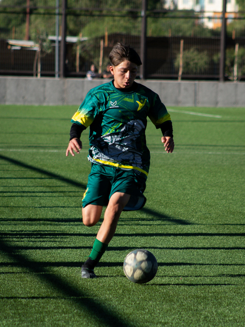

There’s a moment in youth sport that doesn’t get enough attention. It doesn’t happen on the field, the court, or the track. It happens in the car afterwards, seatbelt on, engine running, the game still hanging in the air between parent and child. What gets said in that space matters enormously. And most of the time, we get it wrong.
The Most Emotionally Loaded Moment in Youth Sport
Think about what a young person has just been through. They’ve competed in front of people they care about. They’ve tested themselves physically and emotionally. They may have won, lost, played well, made mistakes, been left on the bench, or scored the winning try. Their nervous system is still buzzing. Their sense of self is right on the surface.
And then they get in the car with someone whose opinion matters more to them than anyone else’s in the world.
Research in youth sport psychology consistently highlights the car ride home as one of the most emotionally significant moments in a young athlete’s sporting experience. What parents say, or don’t say, in those first few minutes after a game has a measurable impact on a child’s enjoyment, motivation, and long-term relationship with sport.

Six Words That Change Everything
Bruce Brown and Rob Miller from Proactive Coaching surveyed hundreds of college athletes with a simple question: “What is your worst memory from playing youth sports?” The overwhelming response wasn’t about losing, or getting dropped, or a tough coach. It was “the car ride home from games.”
They also asked what these athletes most wanted to hear from their parents after a game. The answer, across the board, was six words:
“I love watching you play.”
Not “you should have passed earlier.” Not “why didn’t you shoot?” Not even “you were brilliant today.” Just a simple, unconditional expression of enjoyment. No judgement attached. No performance evaluation hidden inside a compliment.
This isn’t about being soft or avoiding the hard conversations. It’s about understanding what a child needs in that particular moment, and what they’re actually capable of hearing.
They Don’t Need a Performance Review
Here’s the thing most parents don’t realise: your child already knows how they played. They know they missed that shot. They know they got beaten to the ball. They know they made a mistake at a crucial moment. They don’t need you to tell them.
When a parent launches into feedback on the way home, even well-intentioned feedback, it sends an unintended message: my love and attention are connected to your performance. Over time, this erodes a young person’s intrinsic motivation. Sport starts to feel like something they do for their parent rather than something they do for themselves.
The car ride home is not a coaching session. It’s a relationship moment. And the child needs connection, not correction.
Processing vs. Evaluating
There’s an important difference between processing an experience and evaluating it. Processing sounds like: “That was a tough game, eh?” or “How are you feeling about it?” Evaluating sounds like: “You played well in the first half but dropped off in the second.”
Processing is led by the child. It gives them space to make sense of what happened on their own terms, at their own pace. Evaluating is led by the parent. It imposes an external judgement on an experience the child is still sitting with.

When we let the child lead, they often surprise us. They might want to talk about a funny moment with a teammate. They might want to sit in silence. They might want to talk about what they want for dinner. All of these are valid. All of them are healthy ways of moving through an emotional experience.
The parent’s job is not to direct the processing. It’s to create the conditions where it can happen naturally.
What You Can Do Differently
None of this requires a psychology degree. It requires awareness, some restraint, and a genuine willingness to put the child’s needs ahead of your own. Here are some practical things to try:
- Wait. Give it time. Don’t fill the silence the moment the car door closes. Let your child settle. If they want to talk, they will. If they don’t, that’s fine too.
- Ask open questions. If you do speak, try “What was the highlight for you today?” or “What did you enjoy most?” rather than “Why didn’t you do X?” Open questions invite reflection. Closed questions invite defensiveness.
- Separate your investment from theirs. This is the hardest one. Parents are deeply invested in their children’s sport, and that’s natural. But your disappointment about a result is not their burden to carry. Find somewhere else to process your own feelings, a partner, a friend, a quiet moment, so you don’t inadvertently pass them on.
- Check your body language. Children are remarkably perceptive. They can read your frustration in a sigh, a tight grip on the steering wheel, or a silence that feels loaded rather than peaceful. Your non-verbal communication speaks louder than your words.
- Say the six words: “I love watching you play.” Say it after a win. Say it after a loss. Say it when they played brilliantly and when they struggled. Make it unconditional.
An Underserved Space
Parenting in sport is one of the most underserved areas in sport psychology. We invest heavily in coaching education, athlete development, and high-performance systems. But the people who arguably have the greatest influence on a young athlete’s experience, their whānau, are often left without any guidance at all.
This isn’t because parents don’t care. It’s the opposite. Most parents care deeply, so deeply that they over-function, over-analyse, and over-talk. The intention is always good. But the impact doesn’t always match.
We believe whānau play a critical role in athlete development, not as coaches or analysts, but as the emotional anchors that make sport a safe and enjoyable place to grow. When a child knows that their parent’s love isn’t contingent on how they perform, they’re free to take risks, make mistakes, and fall in love with the process of getting better.
And it starts with what happens in the car on the way home.
If you’re a parent navigating the world of youth sport, you’re not alone. Our Parental Support programmes are designed to give whānau practical tools for supporting young athletes, without the pressure of getting it perfect.